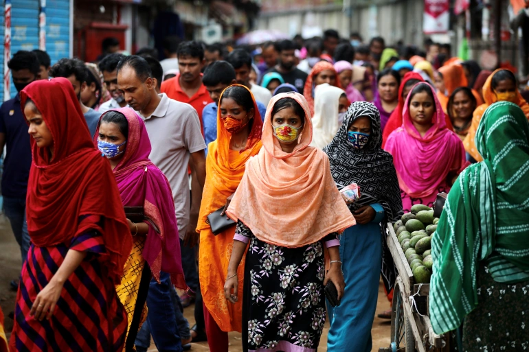
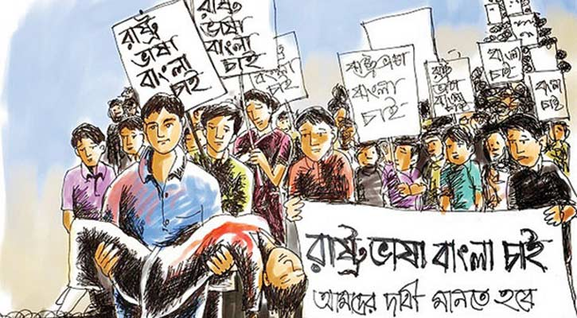
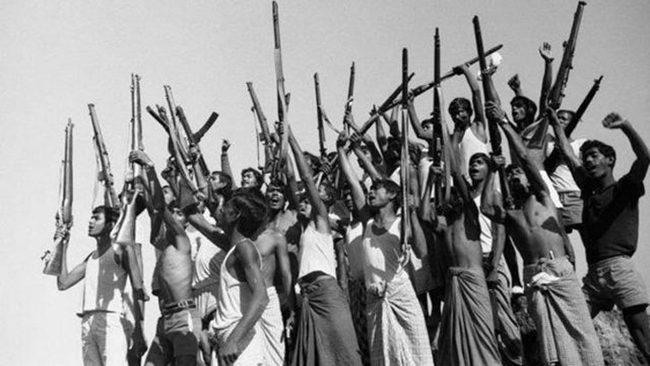

Bangladesh
I Love Bangladesh
Barisal Division
বরিশাল বিভাগ বাংলাদেশের আটটি প্রশাসনিক বিভাগের একটি। দেশের দক্ষিণ-মধ্য অংশে অবস্থিত, এটির আয়তন 13,644.85 কিমি2 (5,268.31 বর্গ মাইল), এবং 2011 সালের আদমশুমারিতে জনসংখ্যা 8,325,666। এটি সমগ্র বাংলাদেশের মধ্যে সবচেয়ে কম জনবহুল বিভাগ

Chittagong Division
চট্টগ্রাম বিভাগ, আনুষ্ঠানিকভাবে চট্টগ্রাম বিভাগ নামে পরিচিত, ভৌগলিকভাবে বাংলাদেশের আটটি প্রশাসনিক বিভাগের মধ্যে বৃহত্তম। এটি 2011 সালের আদমশুমারিতে মোট 33,909.00 কিমি 2 (13,092.34 বর্গ মাইল) এবং জনসংখ্যা সহ দেশের দক্ষিণ-পূর্বতম অঞ্চলগুলিকে কভার করে।

Dhaka Division
ঢাকা বিভাগ বাংলাদেশের মধ্যে একটি প্রশাসনিক বিভাগ। ঢাকা ঢাকা বিভাগ, ঢাকা জেলা এবং বাংলাদেশের রাজধানী শহর হিসেবে কাজ করে। বিভাগটি একটি জনসংখ্যা চুম্বক হিসাবে রয়ে গেছে, 20,508.8 কিমি 2 এলাকা জুড়ে রয়েছে যার জনসংখ্যা 44 মিলিয়নের বেশি, যা পূর্বের গণনা থেকে 1.94% হারে বৃদ্ধি পাচ্ছে, দেশটির তুলনায়
Khulna Division
খুলনা বিভাগ বাংলাদেশের আটটি বিভাগের মধ্যে দ্বিতীয় বৃহত্তম। এটির আয়তন 22,285 কিমি2 (8,604 বর্গ মাইল) এবং 2011 সালের বাংলাদেশ আদমশুমারিতে জনসংখ্যা 15,563,000। এর সদর দপ্তর এবং বৃহত্তম শহর খুলনা জেলার খুলনা শহর।
Mymensingh Division
ময়মনসিংহ বিভাগ বাংলাদেশের আটটি প্রশাসনিক বিভাগের একটি। 2011 সালের আদমশুমারি অনুসারে এর আয়তন 10,485 বর্গ কিলোমিটার (4,048 বর্গ মাইল) এবং জনসংখ্যা 11,370,000। এটি 2015 সালে ঢাকা বিভাগের উত্তরাঞ্চলের জেলাগুলি থেকে তৈরি করা হয়েছিল। এর সদর দপ্তর ময়মনসিংহ জেলার ময়মনসিংহ শহরে।
Rajshahi Division
রাজশাহী বিভাগ বাংলাদেশের আটটি প্রথম-স্তরের প্রশাসনিক বিভাগের একটি। এটির আয়তন 18,174.4 বর্গ কিলোমিটার (7,017.2 বর্গ মাইল) এবং 2011 সালের আদমশুমারি অনুসারে 18,484,858 জনসংখ্যা। রাজশাহী বিভাগ ৮টি জেলা, ৭০টি উপজেলা এবং ১,০৯২টি ইউনিয়ন নিয়ে গঠিত।
Rangpur Division
রংপুর বিভাগ বাংলাদেশের একটি বিভাগ। এটি 25 জানুয়ারী 2010-এ বাংলাদেশের 7 তম বিভাগ হিসাবে গঠিত হয়েছিল। এর আগে এটি রাজশাহী বিভাগের অধীনে ছিল। রংপুর বিভাগ আটটি জেলা নিয়ে গঠিত। এই আটটি জেলার অধীনে 58টি উপজেলা বা উপজেলা রয়েছে। রংপুর উত্তরাঞ্চল

Sylhet Division
সিলেট বিভাগ বাংলাদেশের উত্তর-পূর্ব বিভাগ। এটি উত্তর, পূর্ব এবং দক্ষিণে যথাক্রমে ভারতীয় রাজ্য মেঘালয়, আসাম এবং ত্রিপুরা এবং দক্ষিণ-পশ্চিমে চট্টগ্রামের বাংলাদেশী বিভাগ এবং পশ্চিমে ঢাকা ও ময়মনসিংহ দ্বারা সীমাবদ্ধ। 1947 সালের আগে, এটি সাবডিভি অন্তর্ভুক্ত করেছিল
বাংলাদেশ
বঙ্গোপসাগরের তীরে ভারতের পূর্বে অবস্থিত বাংলাদেশ একটি দক্ষিণ এশিয়ার দেশ যা সবুজ শ্যামল এবং অনেক জলপথ দ্বারা চিহ্নিত। এর পদ্মা (গঙ্গা), মেঘনা ও যমুনা নদী উর্বর সমভূমি তৈরি করে এবং নৌকায় ভ্রমণ সাধারণ। দক্ষিণ উপকূলে, সুন্দরবন, পূর্ব ভারতের সাথে ভাগ করা একটি বিশাল ম্যানগ্রোভ বন, রয়্যাল বেঙ্গল বাঘের আবাসস্থল। 1947 সালে ভারত বিভক্তির সাথে, এটি পাকিস্তানের পাঁচটি প্রদেশের মধ্যে একটি পূর্ব বাংলার পাকিস্তানি প্রদেশে পরিণত হয় (পরবর্তীতে পূর্ব পাকিস্তানের নামকরণ করা হয়), যা ভারতীয় ভূখণ্ডের 1,100 মাইল (1,800 কিমি) দ্বারা অন্য চারটি থেকে বিচ্ছিন্ন হয়। 1971 সালে এটি বাংলাদেশের স্বাধীন দেশে পরিণত হয়, যার রাজধানী ছিল ঢাকা।
বাংলাদেশ ভাষা আন্দোলন
বাংলা ভাষা আন্দোলন ছিল ১৯৪৭ থেকে ১৯৫৬ পর্যন্ত তৎকালীন পূর্ব বাংলায় (বর্তমান বাংলাদেশে) সংঘটিত একটি সাংস্কৃতিক ও রাজনৈতিক আন্দোলন। মৌলিক অধিকার রক্ষাকল্পে বাংলা ভাষাকে ঘিরে সৃষ্ট এ আন্দোলনের মাধ্যমে তদানীন্তন পাকিস্তান অধিরাজ্যের অন্যতম রাষ্ট্রভাষা হিসেবে প্রতিষ্ঠার লক্ষ্যে গণদাবির বহিঃপ্রকাশ ঘটে।
বাংলাদেশ স্বাধীনতা যুদ্ধ
বাংলাদেশের স্বাধীনতা যুদ্ধ ছিল ১৯৭১ সালে সংঘটিত তৎকালীন পশ্চিম পাকিস্তানের বিরুদ্ধে পূর্ব পাকিস্তানের সশস্ত্র সংগ্রাম, যার মাধ্যমে বাংলাদেশ একটি স্বাধীন দেশ হিসাবে পৃথিবীর বুকে আত্মপ্রকাশ করে। ১৯৭১ সালের ২৬শে মার্চ এই যুদ্ধের সূচনা ঘটে, যখন পাকিস্তানি সামরিক বাহিনী রাতের অন্ধকারে নিরস্ত্র বাঙালির ওপর ঝাঁপিয়ে পড়ে।